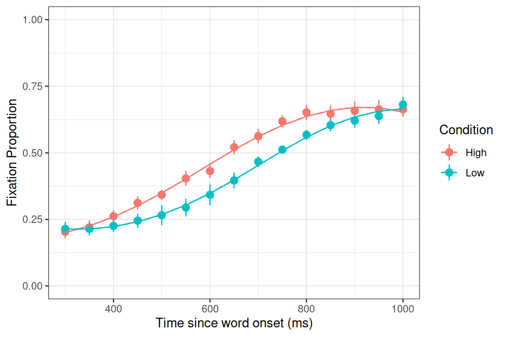

We saw in Lecture 3 a walk-through of using GCA (growth curve analysis) to model the eye-tracking data from a spoken word-to-picture matching task.
The model we saw in the lecture had the following structure and results:
> m.full <- lmer(meanFix ~ (poly1+poly2+poly3)*Condition +
(poly1+poly2+poly3 | Subject) +
(poly1+poly2 | Subject:Condition),
control = lmerControl(optimizer="bobyqa"),
data=TargetFix, REML=F)
> coef(summary(m.full))
Estimate Std. Error t value
(Intercept) 0.4773227513 0.01385240 34.457775306
poly1 0.6385603705 0.05993519 10.654181583
poly2 -0.1095979256 0.03848819 -2.847573180
poly3 -0.0932611870 0.02041640 -4.567955536
ConditionLow -0.0581122429 0.01901291 -3.056462582
poly1:ConditionLow 0.0003188189 0.06330556 0.005036191
poly2:ConditionLow 0.1635455113 0.05426498 3.013831365
poly3:ConditionLow -0.0020869051 0.02014728 -0.103582452There are two rules of thumb for reporting growth curve analysis results, but here are some guidelines:
Here is how we might report the results from the example above:
[Note, we haven’t included Table 1 here. If you want a nice way of creating tables, try the tab_model() function from the sjPlot package works for multi-level models too!.]
Growth curve analysis (Mirman, 2014) was used to analyze the target gaze data from 300ms to 1000ms after word onset. The overall time course of target fixations was modeled with a third-order (cubic) orthogonal polynomial and fixed effects of Condition (Low vs. High frequency; within-participants) on all time terms. The model also included participant random effects on all time terms and participant-by-condition random effects on all time terms except the cubic (estimating random effects is “expensive” in terms of the number of observation required, so this cubic term was excluded because it tends to capture less-relevant effects in the tails). There was a significant effect of Condition on the intercept term, indicating lower overall target fixation proportions for the Low condition relative to the High condition (Estimate = -0.058, SE = 0.019, p < 0.01). There was also a significant effect on the quadratic term, indicating shallower curvature - slower word recognition - in the Low condition relative to the High condition (Estimate = 0.16, SE = 0.054, p < 0.01). All other effects of Condition were not significant (see Table 1 for full results).
Above, we analysed the proportion of fixations to the target picture in a given 50~ms time bin (the meanFix variable). We can express this differently, in terms of the number of samples in each 50~ms bin in which there were fixations to the target, and the total number of samples. This can lend itself to being modelled as a binomial (where success is fixation on the target).
In the data, the sumFix variable contains the number of samples in which the target was fixated upon, and the N variable contains the total number of samples in that bin. Like we saw last week, we can model a binomial using cbind(num_successes, num_failures), so here we can use cbind(sumFix, N-sumFix)~ ...
The data (.rda format) is available at https://uoepsy.github.io/msmr/data/TargetFix.rda
library(tidyverse)
library(lme4)
source("https://uoepsy.github.io/msmr/functions/code_poly.R")load(url("https://uoepsy.github.io/msmr/data/TargetFix.rda"))
#make 3rd-order orth poly
TargetFix <- code_poly(TargetFix, predictor="timeBin", poly.order=3, draw.poly=F)
# fit logisitc GCA model
m.log <- glmer(cbind(sumFix, N-sumFix) ~ (poly1+poly2+poly3)*Condition +
(poly1+poly2+poly3 | Subject) +
(poly1+poly2 | Subject:Condition),
data=TargetFix, family=binomial, control = glmerControl(optimizer = "bobyqa"))
summary(m.log)## Generalized linear mixed model fit by maximum likelihood (Laplace
## Approximation) [glmerMod]
## Family: binomial ( logit )
## Formula: cbind(sumFix, N - sumFix) ~ (poly1 + poly2 + poly3) * Condition +
## (poly1 + poly2 + poly3 | Subject) + (poly1 + poly2 | Subject:Condition)
## Data: TargetFix
## Control: glmerControl(optimizer = "bobyqa")
##
## AIC BIC logLik deviance df.resid
## 1419.1 1508.0 -685.6 1371.1 276
##
## Scaled residuals:
## Min 1Q Median 3Q Max
## -1.75430 -0.40973 -0.00307 0.37868 2.06240
##
## Random effects:
## Groups Name Variance Std.Dev. Corr
## Subject:Condition (Intercept) 0.032340 0.17983
## poly1 0.401864 0.63393 -0.68
## poly2 0.147989 0.38469 -0.23 0.73
## Subject (Intercept) 0.001751 0.04185
## poly1 0.343612 0.58618 1.00
## poly2 0.001991 0.04462 -1.00 -1.00
## poly3 0.027493 0.16581 -1.00 -1.00 1.00
## Number of obs: 300, groups: Subject:Condition, 20; Subject, 10
##
## Fixed effects:
## Estimate Std. Error z value Pr(>|z|)
## (Intercept) -0.11675 0.06548 -1.783 0.074591 .
## poly1 2.81834 0.29833 9.447 < 2e-16 ***
## poly2 -0.55911 0.16952 -3.298 0.000973 ***
## poly3 -0.32075 0.12771 -2.512 0.012017 *
## ConditionLow -0.26157 0.09095 -2.876 0.004030 **
## poly1:ConditionLow 0.06400 0.33134 0.193 0.846840
## poly2:ConditionLow 0.69503 0.23977 2.899 0.003747 **
## poly3:ConditionLow -0.07065 0.16617 -0.425 0.670689
## ---
## Signif. codes: 0 '***' 0.001 '**' 0.01 '*' 0.05 '.' 0.1 ' ' 1
##
## Correlation of Fixed Effects:
## (Intr) poly1 poly2 poly3 CndtnL pl1:CL pl2:CL
## poly1 -0.288
## poly2 -0.128 0.272
## poly3 -0.100 -0.228 -0.015
## ConditionLw -0.690 0.297 0.081 0.012
## ply1:CndtnL 0.372 -0.552 -0.292 -0.024 -0.541
## ply2:CndtnL 0.080 -0.230 -0.701 0.034 -0.116 0.415
## ply3:CndtnL 0.013 -0.020 0.037 -0.637 -0.003 0.031 -0.056
## optimizer (bobyqa) convergence code: 0 (OK)
## boundary (singular) fit: see ?isSingularSimpler random effects: note that the correlations between Subject-level random effects are all +1.00 or -1.00, so can simplify the structure by removing them:
m.log_zc <- glmer(cbind(sumFix, N-sumFix) ~ (poly1+poly2+poly3)*Condition +
(poly1+poly2+poly3 || Subject) +
(poly1+poly2 | Subject:Condition),
data=TargetFix, family=binomial, control = glmerControl(optimizer = "bobyqa"))
summary(m.log_zc)## Generalized linear mixed model fit by maximum likelihood (Laplace
## Approximation) [glmerMod]
## Family: binomial ( logit )
## Formula: cbind(sumFix, N - sumFix) ~ (poly1 + poly2 + poly3) * Condition +
## (poly1 + poly2 + poly3 || Subject) + (poly1 + poly2 | Subject:Condition)
## Data: TargetFix
## Control: glmerControl(optimizer = "bobyqa")
##
## AIC BIC logLik deviance df.resid
## 1411.6 1478.3 -687.8 1375.6 282
##
## Scaled residuals:
## Min 1Q Median 3Q Max
## -1.69598 -0.41491 -0.00141 0.33691 2.07563
##
## Random effects:
## Groups Name Variance Std.Dev. Corr
## Subject.Condition (Intercept) 0.03404 0.1845
## poly1 0.42307 0.6504 -0.63
## poly2 0.15312 0.3913 -0.25 0.70
## Subject poly3 0.00000 0.0000
## Subject.1 poly2 0.00000 0.0000
## Subject.2 poly1 0.44471 0.6669
## Subject.3 (Intercept) 0.00000 0.0000
## Number of obs: 300, groups: Subject:Condition, 20; Subject, 10
##
## Fixed effects:
## Estimate Std. Error z value Pr(>|z|)
## (Intercept) -0.11770 0.06544 -1.798 0.07210 .
## poly1 2.82162 0.31822 8.867 < 2e-16 ***
## poly2 -0.55892 0.17054 -3.277 0.00105 **
## poly3 -0.31340 0.11646 -2.691 0.00712 **
## ConditionLow -0.26066 0.09280 -2.809 0.00497 **
## poly1:ConditionLow 0.06593 0.33782 0.195 0.84527
## poly2:ConditionLow 0.69049 0.24206 2.853 0.00434 **
## poly3:ConditionLow -0.06654 0.16627 -0.400 0.68904
## ---
## Signif. codes: 0 '***' 0.001 '**' 0.01 '*' 0.05 '.' 0.1 ' ' 1
##
## Correlation of Fixed Effects:
## (Intr) poly1 poly2 poly3 CndtnL pl1:CL pl2:CL
## poly1 -0.379
## poly2 -0.129 0.301
## poly3 -0.018 0.029 -0.054
## ConditionLw -0.705 0.267 0.092 0.012
## ply1:CndtnL 0.357 -0.528 -0.284 -0.027 -0.509
## ply2:CndtnL 0.092 -0.212 -0.703 0.038 -0.131 0.402
## ply3:CndtnL 0.012 -0.020 0.037 -0.699 -0.003 0.033 -0.056
## optimizer (bobyqa) convergence code: 0 (OK)
## boundary (singular) fit: see ?isSingularPlot model fit:
ggplot(TargetFix, aes(Time, meanFix, color=Condition)) +
stat_summary(fun.data=mean_se, geom="pointrange") +
stat_summary(aes(y=fitted(m.log)), fun=mean, geom="line") +
stat_summary(aes(y=fitted(m.log_zc)), fun=mean, geom="line", linetype="dashed") +
theme_bw() + expand_limits(y=c(0,1)) +
labs(y="Fixation Proportion", x="Time since word onset (ms)")